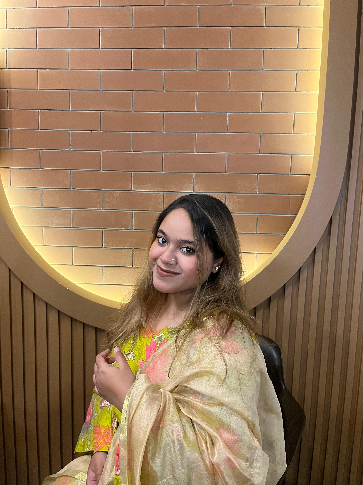

MY PERSONAL STUDENT FILE / 2026
A CSE student who enjoys solving problems, learning new technologies, and turning ideas into small projects.
Currently learning, building and improving — one line of code at a time.

Computer Science & Engineering
01 / A LITTLE ABOUT ME
I'm Tasfia Al Laisa, an undergraduate student of Computer Science and Engineering at International Islamic University Chittagong (IIUC).
My university life has introduced me to programming, data structures, databases, software development and competitive problem solving. I enjoy learning by writing code and building projects that help me understand concepts in practice.
This portfolio is a small collection of my academic journey, programming interests and the projects I've worked on so far.
02 / MY JOURNEY
Completed secondary education with GPA 5.00.
Completed higher secondary education with GPA 5.00.
Began my undergraduate journey in Computer Science and Engineering at IIUC.
Practicing algorithms, exploring development and working on academic projects.
03 / MY TOOLBOX
Technologies and concepts I have studied or practiced through coursework and personal projects.
04 / THINGS I'VE BUILT
I enjoy turning ideas into practical projects and applying what I learn as a Computer Science and Engineering student. From programming and data structures to database management and web development, each project helps me improve my technical skills, creativity, and problem-solving ability. Visit my projects page to explore the applications I have built and learn more about my work.
05 / CP profile
Think • Solve • Improve
Every problem is a new opportunity to learn.
Competitive programming has become an important part of my journey as a Computer Science and Engineering student. I have solved more than 2,500 programming problems across different online judges, including Codeforces, AtCoder, LeetCode, CSES, and other platforms. I currently have a Newbie rating on Codeforces, and I am continuously working to improve my skills and rating.
For me, competitive programming is more than just writing code. It teaches me to think logically, break complex problems into smaller steps, explore different approaches, and find efficient solutions. Topics such as algorithms, data structures, mathematics, recursion, and dynamic programming challenge me to think beyond the obvious answer.
Every accepted solution gives me motivation, while every wrong answer reminds me that there is always something new to learn. Competitive programming encourages patience, consistency, creativity, and healthy competition. My goal is to keep practising, learn advanced concepts, improve my problem-solving ability, and become a better programmer every day.
Explore My CP ProfilesProblems Solved
Coding Platforms
06 / SAY HELLO
I'm always interested in learning, sharing ideas and connecting with people who enjoy technology. Feel free to reach out to me!
Let's connect and share ideas about programming, technology and software development.